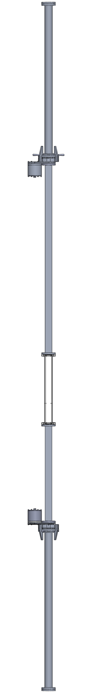
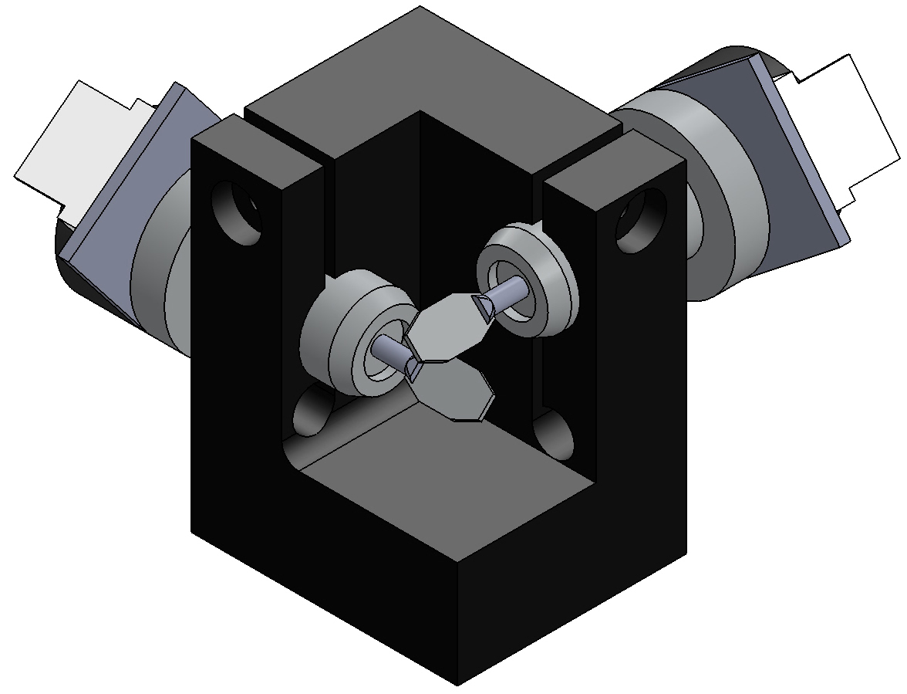
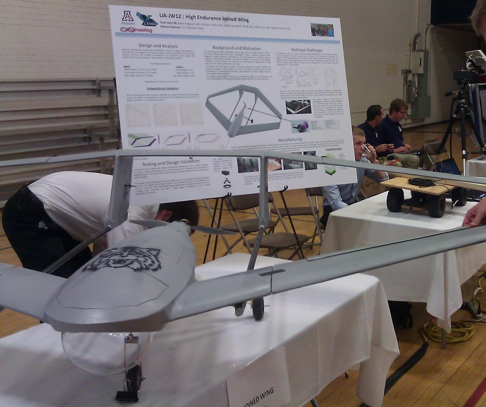

./projects
Things I've built, created, programmed, etc
Physical Projects
These are projects that I have designed and built that resulted in some sort of physical product - furniture, devices, tools, and so on. These projects are particularly useful as they let me expand my working knowledge of the design concepts and fabrication techniques on something I can hold in my hands and use at the end of the project. This is especially insightful as the shortcomings of a design or technique and how they might be improved quickly become evident when you're the one using the thing you create.-
Ph.D Dissertation: Dual Driver Vertical Shock Tube (January 2016 - August 2022 (Expected)Novel shock-tube design utilizing two vertically opposed shock tube driver and driven sections located on opposite ends of a test section.
Optimized for longest possible post-reshock growth period following reshock. Optimization performed using LibCMA-ES genetic optimization library coupled to a method of characteristics solver. LibCMA-ES developed by Benez (Github), coupling and simulation code developed in house.Designed, constructed, tested, and utilized by me for my Ph.D research, with acknowledgement to all members of the Fluid Mechanics and Instability lab for design and construction assistance, especially Matthew Mokler. Substantial fabrication and machining assistance from the AME machine shop.
See citations listed under Talks and Presentations on my resume for information on collected data and more detailed design discussion.
-
Masters Thesis: 3D Imaging Apparatus (August 2012 to May 2014)Created as part of my work on my Masters Thesis in Aerospace Engineering at the University of Arizona.
Goal: design and implement a mechanism to capture the initial conditions of the Richtmyer-Meshkov fluid instability (RMI) prior to shock wave arrival.
Accomplished using a device known as a Galvanometer with attached mirrors, combined with an Arduino Mega and 8-bit DAC with custom-designed PCB for current control.
Demonstrated successfully and used to capture several experiments, which were then used for computational simulations of the instability.
Subsequent improvements in the form of faster galvanometers and better mirror coatings have further improved results.
-
Senior Capstone Design: Joined Wing UAV (August 2011 to May 2012)Created to satisfy requirements of the senior capstone design project, required for graduation from the University of Arizona's Aerospace Engineering program
Chief Responsibilities: Team Lead and Aircraft Aerodynamic Design and planform sizing
Goal: Design and construct an unmanned aerial vehicle with a Joined Wing design, featuring a continuous loop between the primary and secondary lifting surfaces
Advantages include reduced structual weight, additional payload capacity, and greater aerodynamic efficiency due to reduction of trailing vorticies
Successfully designed, built, and flight tested. Initial measurements agree with expected aerodynamic performance
Improvements to be made in the form of additional motors, as well as refined winglet and structural design to reduce drag and weight
-
The cat boxThe 'cat box' is an affectionate name I gave to this dresser-sized box I built. The box is wood and is hollow on the inside with plywood sheets making up the surface. The box's interior is large enough to accomodate a covered cat litter box with room to remove it for cleaning via a front door. A secondary cabinet allows for storage of things such as waste bags and additional supplies
The purpose of the cat box is to lessen the dust and odors associated with a litter box. It also has the added benefit of reducing the litter tracked in to my apartment by my cat as most of it gets caught on a piece of scrap carpet located inside the box. -
Custom Server RackThis is a custom-designed and built server rack to hold my various home eletronics. This includes a 4U server chassis that houses my home server, various networking gear (router, modem, wireless AP, etc), and smart home bridges, as well as a power strip/surge protector to provide power to these items.
This was another "I wonder if I can do it" project, partially while looking for projects as the COVID-19 pandemic necessitated lockdowns. My original plan was to purchase an off-the-shelf server rack sufficient for home use, but it turned out that these are both very expensive and substantially overbuilt for my needs. This seemed like a prime candidate for a DIY project - something which would test my existing skills and allow me to create something that is otherwise hard to find that meets my needs.
The rack consists of a box frame that was built out of 2040 aluminum extrusions, and the side panels are cedar planks that were assembled and routed to slide in to the channels in the aluminum extrusion. The rack rails are also attached to the extrusion frame, offering substantial weight capacity. The rack also has 4 caster wheels mounted to the bottom to facilitate moving the rack around as needed.
Digital Projects
-
fergu.netThis website was designed and built by me from the ground up using HTML, CSS, and Javascript. The primary goal was just to gain the experience of building a website and to see if it was something I chould achieve. The site is hosted via Github Pages.
-
Javascript Wind TunnelCheck it out!
A simple website that solves the potential flow equations for 2D flow around a cylinder and then utilizes a conformal mapping technique to map the result to flow around an airfoil at an arbitrary angle of attack. Designed primarily as a visualization tool to to help younger audiences visualize the flow around a wing.
Further improvements are in progress. Eventual goal is to implement a GPU shader-based simulation of the Navier-Stokes equations for this same physical configuration to make the resulting flow visualization both look and behave more realistically, including boundary layers, flow separation, etc. For example, see Haxiomic's GPU Fluids Simulation.